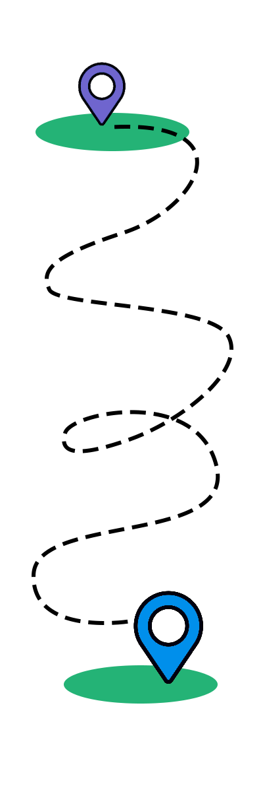
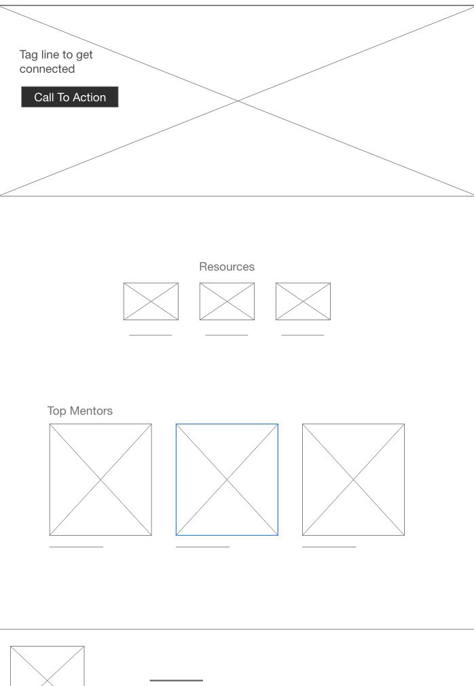
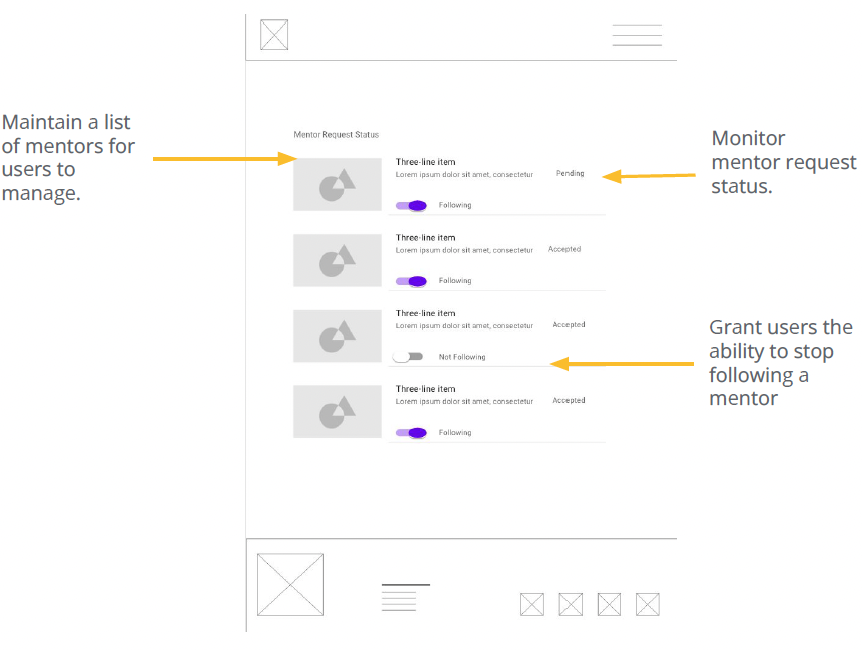
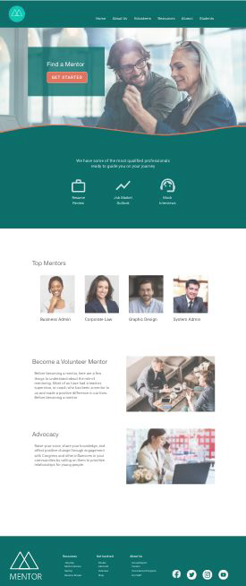
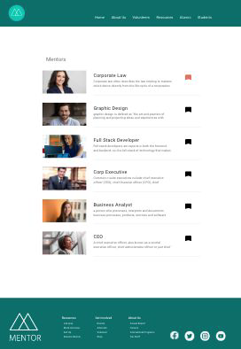
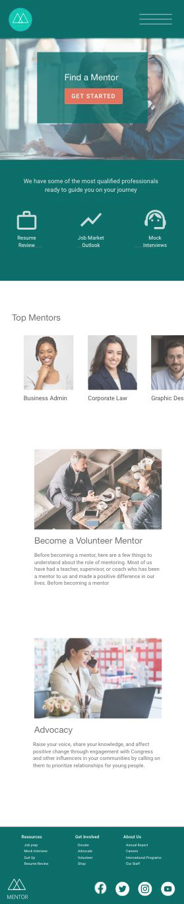
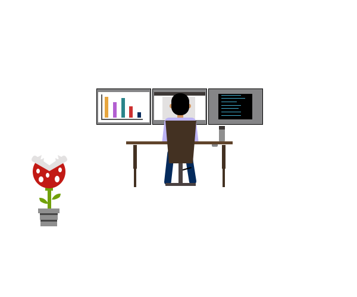
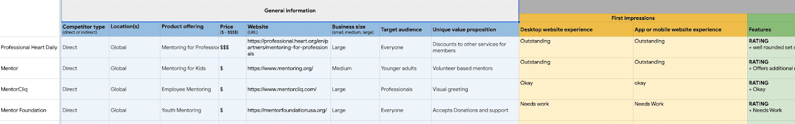

CASE STUDY
Mentor App Concept

Project Overview
People entering into a new industry often feel lost and uncertain of several things. The goal to help them connect with an established professional to help guide them or redirect them in a new career path.
My goal is to help individuals entering into a new industry get guidance and direction from seasoned professionals. Helping them to move further, faster and with confidence in their decisions.
Project duration March 2023 - March 2023.
My role within this project is that of a Lead UX designer, UX Researcher, UX Tester and Developer.
| Tech Stack | Adobe XD (concept prototype, not built) |
|---|---|
| Project Type | UX concept |
| Role | Lead UX Designer, UX Researcher, UX Tester, Developer |
| Completion Date | Mar 2023 |
- Manage Mentors: The ability to manage current and pending Mentors.
- Expandable Services: Additional services can be expanded to include specific types of services provided by Mentors.
- Complete Process: A way to get back to the home page from Mentors — users relied on the nav bar to get back home.





As the sole designer and researcher on this concept, I explored the space from competitive research through a high-fidelity Adobe XD prototype.
User Research

User research was conducted as an unmoderated usability study which focused on pain points discovered in existing mentor websites. I assumed mentors would be a one to one union, however after some research it was identified they would be better suited to a many to many pairing instead.
Competitive Audit

It seems several of our top competitors were not expanding on multiple mentors and could use some design updates to their apps and websites.
Pain Points
- Where is everyone: The ability to connect with other users.
- Mentors: I'm ready to learn more from an additional mentor.
- Did That Work: The need for a confirmation or status page when a mentor request has been submitted.
Lo Fidelity Prototypes
User flow to connect with mentor as well as a "Manage Mentors" view.
Digital Wireframes
Hi-fidelity Mockups: Adding this additional view to allow users to manage multiple mentors as well as identify if a mentor has accepted their request.
Usability Study Findings
- Mentors: The ability to manage current and pending Mentors.
- Features: Additional services can be expanded to include specific types of services provided by Mentors.
- Complete Process: A way to get back to the home page from Mentors, users relied on the nav bar to get back home.
Hi-Fi Mockups
Impact
The potential impacts of the design would be beneficial in the user flow as most competitors struggle need work in this area. I could imagine an application like this being of great value to anyone changing jobs or entering into a new job industry.
What I Learned
Starting a new project pushes me to explore different perspectives and force myself to look for additional features or services not yet provided by any competitors. This in itself is a valuable skill set to apply not only to projects but to life.
EXPLORE MORE
Continue through the portfolio.
Browse the complete project collection, or reach out if you would like to discuss the engineering and design decisions behind this work.